Role Based Access Control (RBAC) has been developed by the National Institute Of Standards And Technology (NIST). It is based on the idea that a specific user does not have any permission to access any object directly, but he/she is assigned to a role. These roles contain exactly defined permissions to protect objects and data against unauthorized access. A specific user may be assigned to one or more roles (see Figure 1)
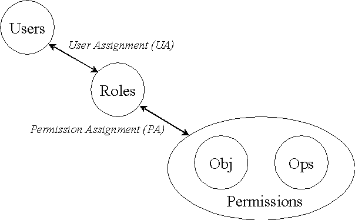
Figure 1: RBAC reference model
The implemented RBAC system in ILIAS3 follows the proposed recommendations for an RBAC reference model, level 1 ('Core RBAC') by NIST. Core RBAC defines a minimum collection of RBAC elements, element sets, and relations in order to completely achieve a Role-Based Access Control system. This includes user-role assignment and permission-role assignment relations, considered fundamental in any RBAC system.
In addition, Core RBAC introduces the concept of role activation as part of a user's session within a computer system which is partly implemented in ILIAS3 (see Active Roles).
All resources in ILIAS3 are treated as objects and are organized in a tree structure (see object concept) which allows in conjunction with RBAC the concept of Local Roles (Roles with limited scope), Role Permission Templates and the inheritance of object permissions. These features greatly simplify the administrative tasks of the system. In addition, the tree structure is crucial to RBAC by handling the problem of newly created objects (see Permission inheritance).
All RBAC protected objects are stored in the tree structure. The term 'RBAC protected objects' refers to all objects which have its own permission set stored in the database. Some object types like user or role don't have a permission setting because it is not necessary to distinguish within RBAC among them. But to provide any access control to these object types, they are latched into specific container objects (Role folder respectively User folder) which are subject to access control by the RBAC system.
For every object exists a set of permissions linked to a role. Each role has its own set of permissions for every individual object! What happens if you create a new object is that you are required to set the permissions of the object for every existing role in the system which is first an intolerable administrative effort for the user and second a possible security hole.
Therefore ILIAS3 offers you the possibility to set a so called Permission Template for each role. That means you can create default permissions for every object type. If a specific object is created, the permissions are set accordingly to these template permissions.
Furthermore it is possible to accommodate the permissions of all existing objects after changing the role template (see option description 'Change existing Objects'). You can also assign/deassign users to roles.
As stated above, roles are linked into the Object hierarchy by latching them in a specific Role folder. The so called System Roles (Administrator, Author and Learner) are roles, which are stored in the main Role Folder right beneath the System Settings Folder. This is the top most Role Folder object and the roles within it do have a 'global' influence on all objects in ILIAS3. If a new object is created anywhere in the hierarchy, it 'inherits' its permissions from these System Roles.
Every RBAC protected object can possess its own role folder where you may add new roles (and assign users to them). Roles in other role folders except the main Role folder in the system settings are called 'local roles' because they only have a local scope. Their influence ranges from the location in the object hierarchy downwards the tree structure including the parent object where the Role folder is assigned to.
We distinquish two types of local roles:
Role Templates are like common roles but you cannot assign users to them. The purpose of Role Templates is to store individual permission presets you want to use later on particular objects only. Whenever you create a new Local Role you are prompted to set its permission rules. Instead of applying all permission settings manually every time a new Local Role is created, you may just adopt your settings from a Role Template.
Normally when you setup your access control strucure for the first time by modelling the proper Roles and Local Roles you aim for a role model that automate the permission settings for most cases to keep administrative maintainance low. But in some special cases you want to change the permission settings for an individual branch of your object hierarchy that cannot be covered by pre-defined permission rules (i.e. Consider an unpredictable minor change in your organizational structure or in the responsibility of a small subset of users.) In such cases Role Templates can be useful to accommodate the changes with 'one click'.
In the Adminstration console Role Templates are distinquished from common roles by the color of their icons. Icons for Role Templates are greyed.
When ever a user creates a new object its permission settings is inherited from all role permission templates found in any Role folder 'above', starting from the position where the new object is inserted into the object hierarchy. The RBAC system 'looks up' the tree structure and creates for each role found on the path a permission set for the new object. At this point the benefits of the object hierarchy become apparent: The user who created the object doesn't need to worry about any permission settings as this is done automatically by the system.
Stopping Permission Inheritance
You may interrupt this inheritance mechanism for every object and role separately. This is useful when you want to alter the permission setting rules for new objects of an existing role only at a specific position in the object hierarchy. What happens is that under the object a new local role folder is created (only if there is not already one existing) and a local role with the same name is created.
This local role is 'linked' with that role from which the inheritance was stopped. You may then alter the permission settings of the linked local role. It is theoretically possible to stop the inheritance of a specific role arbitrarily often. The local scope of each linked local role reaches down the tree structure until another linked local role from the same 'master' role is found. Remember that these rule for the scope of local roles also apply to the option Change existing objects. Only the objects in the scope are accommodated!
All configurations in ILIAS3 are done in the administration console. Here you can manage all objects and administrate the general settings of your system. To get to the administration console, log into the system with an Administrator account and click in the main menu on the button with the monkey wrench.
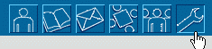
Figure 2: Where to enter the administration console
The administration console uses two frames. A navigation frame to the left shows all available system resources. The big content frame on the right shows different information of a system resource you have currently selected.
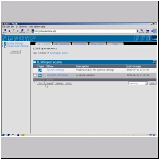
Screenshot: Interface components of the administration console
This explorer-like interface represents your current system resources in their hierarchical order. All available objects are shown with their title and a small icon which tells you the type of each object. When an object contains other objects a small plus icon is displayed next to that object. By clicking on it you can expand the view to show the containing objects in the explorer frame. When you click on the object title its content is shown in the content frame to the right.
With the refresh button right under the explorer tree you can reload the view after altering your system resources (i.e. added/moved or deleted objects in the hierarchy).
Each panel you are viewing in the content frame is composed of several interface elements:
Enter the 'system settings' by clicking the name either in the navigation frame or in the content frame. You see several sub objects and a list of basic settings.
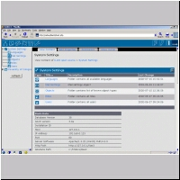
Screenshot: The main System Settings folder
todo
In this panel all language administration is done. ILIAS3 is capable of supporting multiple languages.
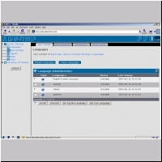
Screenshot: Language administration panel
Click on the permission tab and specify which roles should grant the users normal Email usage or sending of internal system messages.
todo: some mail settings are missing
This panel offers options only for developers. You don't need to change here anything. The purpose of this panel is to change the assignment of operations to each object type. Click on an object in the list and choose the tab 'Edit Operations'. Here you may enable and disable the possible operations for the current object.
The Role Management panel is where the primary permission setting is done. Here you define the access rules for each role and assign users to them. When you enter the Role Management you see a list of already existing roles and role templates, each with its name and a short description. Roles have a blue icon, those for role templates are grey. The only difference between a role and a role template is that you cannot assign users to a role template.
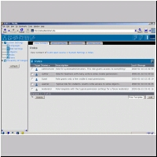
Screenshot: Overview of existing Roles and Role Templates
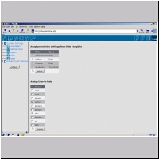
Screenshot: Panel for adopting role permission settings and user-role assignment
There are 12 different permissions in ILIAS3. In the following table is a description how each permission behaves when a user performs an operation on a RBAC protected object.
| Permission | description |
|---|---|
| Create | User can create an object of that type. This permission is checked when the users tries to add a new object of that type. |
| Delete | User can delete an object of that type. This permission is checked when the users tries to delete any object. |
| Delete Post | User can delete a post in a forum. This permission is checked when the users tries to delete a post in a forum. Toggles the display of 'delete' in the option list shown at the bottom of each post. This permission only applies to the forum object. |
| Edit Permission | User can modify the permission settings of an object of that type. This permission is checked when the users tries to access the permission settings panel. |
| Edit Post | User can edit a post in a forum. This permission is checked when the users tries to edit a post in a forum. Toggles the display of 'edit' in the option list shown at the bottom of each post. This permission only applies to the forum object. Note that a post can always be edited by its author. |
| Join | User can autonomous join a group respectively subscribe to a course or learning module. This correspond to the concept of open groups in ILIAS2.x where a user can freely subscribe to a group. If this permission is not granted to the user he only may join a group by being invited of a group member, and according to learning modules and course the user has to be subscribed manually by another user. |
| Leave | User can autonomous leave a group respectively unsubscribe from a course or learning module. This permission is not used yet. Its purpose was the intention that a user may not leave a group/course on its own but needs to consult the responsible tutor/teacher for that resource. |
| Read | User can read an object of that type. This permission is checked when the users tries to access any object. This is the most common permission since it is checked every time an object is being accessed by a user. |
| Smtp mail | User can send normal Email with the Mailsystem. Toggles the display of the option 'send email' in the mail module when the user composes a new internal mail. |
| System message | User can send internal mails with status 'System message'. Toggles the display of the option 'system messagel' in the mail module when the user composes a new internal mail. A System message is only displayed on the recipient's personal desktop and won't be saved to his message inbox. |
| Visible | User can see an object of that type. This permission is checked whenever the users access a page where objects are displayed. |
| Write | User can edit an object of that type. This permission is checked when the users tries to modify any object. |
If you want to develop new modules for ILIAS3 you might come into the situation that you want to check a specific permission in your application but none of the existing operations seem to suit your special case. Then you need to add new operations to the RBAC system what can be easily done. How to add new operations and further details for developers are described in the section Information for developers
Here you can add, delete and review all user accounts.
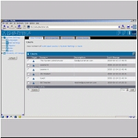
Screenshot: The user administration panel
The term object management refers not to a specific panel but to the basic administrative task like creating, deleting, copying and moving objects within your object hierarchy. Most objects can be manipulated this way, except special folder objects like the system settings folder or role folders. In the object list below you see different buttons that provide you the basic managing options: Cut, copy, link, paste, delete.
Working with this tools is done in a manner similar to any file explorer you might used to from your PC.
Adding an new object: To the bottom right of your object list you see a dropdown menü, where you choose the desired object you want to create in the object currently viewing. Depending on the object's containment rules defined in objects.xml the list of the offered subobjects may differ. When you have selected an object you are taken to the edit properties panel that you are already familiar with. Click 'save' when finished to register the new object to the system.
Moving an object
Select the objects in the list you want to cut by checking the approbiate checkboxes and click on 'cut'. You will still see the object(s) in the list but they are now crossed out. Furthermore a new button appeared in in the button bar saying 'paste'. Now browse to the location where you want to move the prior selected object(s). Once arrived click on 'paste' to 'drop' your object(s) in place.
marking
Whenever you select one of the actions cut, copy or link, the selected objects are only marked, the intended action is not performed until you click on 'paste'. What actually happens is that the system only 'remembers' the selected objects and the considered action in the session. Once you have clicked on 'paste' the system conducts your action.
access control
Please note that all involved access control issues of your transactions are checked automatically. For example you may not copy or move an object to a place where you have no create permission for that object. Or you may not move an object although you are permitted to add the object in the new location because you have no right to delete it in the old place (what actually will happen when moving objects).
Linking and copying objects
Both actions create a new reference on the selected object, object_data entry. The difference between both actions is that linked objects are only referenced
Linking an object creates a new reference_id for the selected object(s). This reference_id points to the same object with all its data. Thus it doesn't matter from which reference the object is accessed, you work with the same data set. All references pointing to the same object are treated virtual equal in the system. There is no distinction between the 'original' reference and the 'second', 'third', … Therefore you cannot distinguish between objects in the object hierarchy if they were original created or later linked in that place. When you delete an object the system checks if this would be the last reference of it in the hierarchy and deletes the corresponding data tables too. If there is another reference on this object in the tree, only the reference_id of the selected object is removed.
The managing functions (cut, copy, paste, delete and link) all working recursive. This means that the chosen action is performed with your selected object and all objects under it!
Therefore be careful with the copy function! Because this function copies the whole subtree under the selected object you may overload your server if you have a deep object hierarchy with many levels and have selected an object for copying at the top of the tree. Linking object subtree is no problem because the system only creates new references Ids and insert them into the tree table. Therefore use the copy function with care and limit it to copy single objects or small subtrees. Consider a group containing 5 learning modules, 2 forum and dozen of shared documents. Depending of the size of the course and the files, copying just this small subset of objects could a quite reasonable impact on your server and the database.
The role default setup you will find when installing ILIAS3 the first time reflects the permission model used in ILIAS2.x. The basic system groups 'Administrator', 'Author', 'Learner' and 'Guest' are now referred as system roles. That means that their permission settings basically apply for each newly created object in the system. Users with the role 'Learner' may see all resources and have read access to them, 'Authors' may create new learning modules and edit existing ones and 'Administrators' have access to the Administration console.
Depending on your organizational structure and your projected use of ILIAS3 it might be that you don't need these basic roles at all. Because of the hierarchical concept of the access control system each user must assigned at least one system role in order to access the root node of the system. That means you may setup only one system role called 'ILIAS user' where all permissions are disabled except for the root object (visible and read). Furthermore you need at least an 'Administrator' role that grant you access to everything in order to let you administrate the system.
Consider the following scenario:
A small company offers courses and seminars about the use of standard application software like word processing and working with spreadsheets. The company wants to setup virtual class rooms for the attendants where all resources related to the course are gathered. This could be learning modules for the lessons, additional documents and exercises and collaborative tools for the course members only like a forum or email.
Our role model should satisfy these conditions:
With these assumptions taken above we can identify the following roles:
Setting up the role model and object structure
First we create the system role 'ILIAS user' in the main role folder. In the role's permission template we enable only the visible and read permission for categories beside the root object which requires to be visible and readable too (see above).
How we handle the described 'guest' access? We want to 'tease' new users and encourage them to become our customer by showing to them all currently available seminars. But they only shall see the running courses not those in the archive. The transcription of the described conditions leads to the conclusion that we need to define another system role 'guest'. We only permit the 'visible' permission for categories and groups to the 'guest' role (and for the root object of course).
Now we create two category objects. The first is labelled 'current classes' containing the classes recently running, and the other category 'past classes' to hold classes that are already over. The permission settings for these objects are set up almost correctly due to our predefined settings for the roles 'ILIAS user' and 'guest'. Why almost? Well, we decided that 'guest' only shall peer into the currently running courses not into the archive. Therefore we need to stop the inheritance of permission settings for the 'past courses' category: Select the category and click on the permission tab. In the permission matrix find the column for the 'guest' role and check the box to the bottom saying 'stop inheritance'. Now switch into the newly created role folder and select the local role 'guest'. Here we revoke ALL permissions and activate the option change existing objects (to accommodate the category itself). 'Guest' users now will weather see the 'past courses' category nor be able to access any classes in it.
Now we are ready to set up the 'class rooms' for the seminars. For each class room a new group object is created in the 'current classes' category. For every group we need to define a local role 'class attendant'. Fortunately two local roles are created by default in each group object: A 'member' role and an 'administrator' role. The 'member' role fits well for our intended 'class attendant' role.
We only have to accommodate the permission template settings for that role by enable the following permissions:
The Role template 'Archive'
In this scenario we demanded that after a course is over it should be still accessible by the users formerly attended to it. Since the course has ended the last state should be 'frozen', thus revoking any write access to the resources. This task can be performed by manually revoking all write and create permissions in the role settings once a course is moved to the archive. Or we prepare a Role Template that consist of similar settings above but not the permissions write and create for any object type. With this Role Template at hand we can do this easily by adopting it's permission settings to the member role of the course when we put the group in the archive.
Common use cases and how to conduct them
This is basic framework that fulfils the conditions of the scenario described here. Now you are ready to add your learning modules, forums and documents to each group ('class room') and of course assign users to them.
A remark on the 'guest' role
The idea behind the guest role is to handle all unregistered users. In other words: A role for users passing along the website. This assumes that you are able to access ILIAS3 without having an account what is not possible yet but will be implemented in the initial beta release.
Of course the translation of the assumed conditions in this scenario may be achieved with another role model too. For example the 'guest' functionality could be also realized by setting up a third category called 'public' where you link in the course that should be visible to guests. Then you do not model the 'guest' role as system role but as a local role within the 'public' folder and stop the inheritance for the 'ILIAS user' role. The advantage of this approach is, that not all resources in the 'current courses' are visible to the public but only those you explicitly link into the 'public' folder.
Modelling tips
The conditions I presumed in this scenario were chosen with the intention to scope all features of the RBAC system and demonstrate their usage by common use cases you might encounter when working with ILIAS3. You should now understand the main purpose of the cut,copy,link & paste functionality, of Local Roles and Role Templates, and how to use the options stop inheritance and change existing objects.
The key point is to analyze your organizational structure BEFORE you start modelling your roles. Identify roles and responsibilities of all involved persons and think about the workflow of common tasks you want to implement later in the system. Choosing the wrong model could end up in a very complicated permission administration.
A good rule of thumb to follow when designing a role model is to identify the 'least common denominator' for the permissions that should be granted to users by one role and put this definition on the top of your structure (System Roles). Grant more specialized permissions to users with local roles deeper in the hierarchy. For example if the role 'ILIAS user' in the scenario presented above would grant visible or even read access to all group objects you would end up in stopping the inheritance for each new group created resulting in many local roles I have to consider when managing my resources only to prevent the access for everyone.
Instead of stopping the inheritance for each role you may also change only the object permission. But remember when ever you choose the option change existing objects in a role's permission template where the object's permissions derived from, the permissions will be set back to the permission settings according to the permission rules defined in the Role Permission Template.
The RBAC core system consists of the following classes:
According to the RBAC Functional specification from NIST the functions are divided up in administrative, system and review functions. The class name tells you where it belongs to.
The class files marked with an 'H' at the end of their name are empty yet. They should contain functions belonging to the second level of RBAC with Role Hierarchies. The feature may be implemented in future.
The following picture describes the database structure and the tables involved to RBAC system.
Database model and table relations of the RBAC system
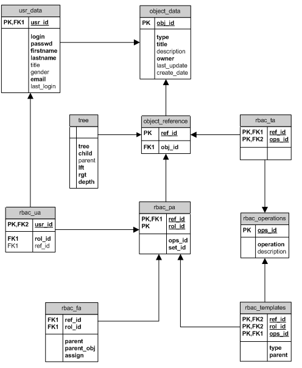
A specific operation (visible, read, write ...) is assigned to each object (Category, Learning Module, Forum …). For each specific object exists a data base entry, which role may exercise which operation on this object. In order to keep the data set small, the operations are serialized, put down thus as string, in the table rbac_pa (Rbac by permission assignment). For roles and users there are no permission entries. The permissions of these object are administrated by the containers (Role Folder ,User Folder) in which they are stored. The tree table contains the information about the object hierarchy. All RBAC protected objects are stored here.
Find an abbreviation for your object type with at least 2 and no more than 5 or 6 characters. This abbreviation is used in the whole system to identify your object type. Examples are frm for the ForumObject, grp for the GroupObject.
Step 2Create the object type definition. This is done in objects.xml
Step 3You have to register your new object type in the system by adding the following data to the object_data table:
INSERT INTO object_data (type, title, description, owner, create_date, last_update)
VALUES ('typ', '<your abbreviation>', '<full name of your object type>', -1, now(), now());
Step 4
Log into ILIAS3 and go to the Object Type Management Panel in the Adminstration Console. Find in the Object type definiton list your previously created object type defintion and click on it. Click the tab Edit Operations to enable the operations you want to allow to be performable on your object type. Some operations are mandatory and should be assign typ every object type like create, visible or read.
If you find out that non of the available operations suit for a special task you have intended for your object type you need to define additional operations (see Defining & adding new operations).
Step 5Now switch to the Role Management Panel and accommodate the access control of the roles for your new object type.
New operations needs to added manually to the database with the following SQL statement
INSERT INTO rbac_operations (operation, description)
VALUES ('<your operation>', '<short description what the operation does>');
The operation in now registered to the system and can by assign to any object type interactively via the Object Administration Panel.
Your basic object classes must be derived from class.ilObject.php and class.ilObjectGUI.php to
ensure the correct integration of your new module into the ILIAS system.
To keep the integration easy the system looks automatically for your derived object classes
by using the name you defined by the attribute 'class_name' in objects.xml as a part of the file name:
class.ilObj<class_name>.php and class.ilObj<class_name>GUI.php.
In the classes directory of the ILIAS3 distribution you will find two template classes (those with the prefix 'template') providing a basic setup. Copy theses templates and rename them to the appropriate file names.
Then you have to accommodate the code according your definitions made in objects.xml (see pictures below):
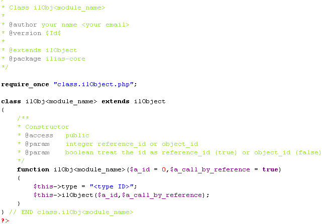
Code snippet of class template for your Object class.
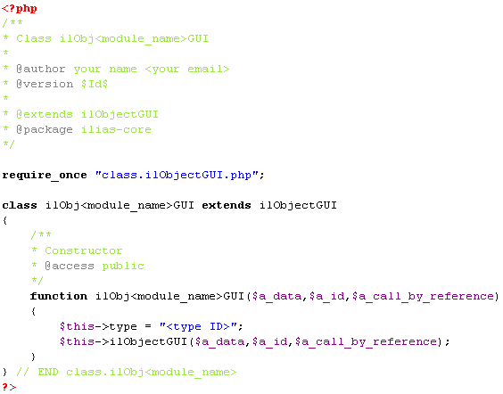
Code snippet of class template for your ObjectGUI class
As you can see both constructors are very similar. The last thing you have to concern about is to decide wether object type is called by a reference ID or its object ID. The common way is to refer an object by a reference ID (That's the default setting). If the derived objects from your new module should be protected by the RBAC system, the object's location in the object hierarchy needs to be stored in the tree table, and therefore have to be called by a reference ID only. (More on this topic can be found in the chapters about Unique Identifiers and todo.
With this basic classes setup you are able to create new instances of your new object type and they have all the basic functionalities already implemented. Now you can start to populate the classes with your own functions.
The file objects.xml contains important basic definitions for each object type in ILIAS3. Here you define an unique identifier which is used in all application levels of ILIAS3 and specify the hierarchical relations between this object type and other object types. In addition, you define also the main interface options - property tabs and action buttons - that should be displayed to the user in the interface.
All type definitions in objects.xml are read on every mouse click in ILIAS3 into the variable $ObjDefinition.
$ObjDefiniton is an object instance of the class class.ilObjectDefinition.php and provides all methods you need to access and work with the object type data (for detailed a description of each method please consult the ILIAS3-API documentation for that class).
Below you see the object type definition for the LearningModule object as an example. right after the example you find a documentation that explains the meaning of each element and what are the effect of their attributes.
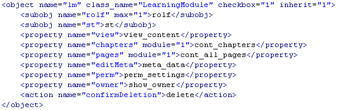
Example XML for an object type definition of 'LearningModule'
| <object> | ||
| Description | This is the root element of an object type definition containing all information about the object type | |
| Subelements | <subobj> (required), <property>, <action> | |
| Attributes | name (required) |
The abbreviation you chose is used in the whole system to identify your object type:
|
| class_name (required) | All object classes must be derived from class.ilObject.php and class.ilObjectGUI.php to
ensure the correct integration of the object type into the ILIAS system.
To keep the integration easy the system looks automatically for your derived object classes
by using class_name as a part of the file name:
class.ilObj<class_name>.php and class.ilObj<class_name>GUI.php.
Both classes are derived from class.ilObject.php and class.ilObjectGUI.php respectively and inherit the required basic funtionality from them.
(see Object concept for more information and example class templates to use for new object classes).
|
|
| checkbox (required in administration panel only) |
Toggles the visibility of the checkbox in the Administration Console. When the user is not allowed to perform any actions with that object (i.e. copy, paste, delete) the value is set to '0', otherwise '1' | |
| inherit (required in administration panel only) |
This flag determines if it is allowed to stop permission inheritance for this object type (set to '1').
Some RBAC protected object are specific container objects that does not allow to contain a local role folder. Examples are the System Folder object (adm) and User Folder object (usrf). |
|
| <subobj> | ||
| Description | Here you define which other object types this object may contain. | |
| Subelements | none | |
| Attributes | name (required) | Put here the Identifier of the object type you want to allow to within this object.
Rules:
|
| max | Determines the maximum number of objects that are allowed to exist of an object type in this object. Some RBAC protected objects with specific purposes like the System Settings Folder object or the Role Folder object may only appear once within another object (max=1) | |
| <property> | ||
| Description | Here you may define different property panels. These panels are displayed in the user interface as 'tabs'. The text you have written between the tag is interpreted as the tab's label. The system treats the label text as a language keyword and automatically attempts to translate the tab label by looking in the language data for an entry with this value. | |
| Subelements | none | |
| Attributes | name (required) | Here you define the command keyword which triggers the property tab in the code. When you click on a tab the global interface control variable $cmd is loaded with that value and send to the server.
You may now process the $cmd variable in your object class and determine what should happen when the command was sent.
Please note that all commands in the administration console trigger appropriate functions named in the way <$cmd>Object. (i.e. If the value of $cmd is 'read' a fuction named 'readObject' is called automatically). This convention only applies to the administration interface.
|
| module | Determines if the property tab should appear in the administration console (no module attribute) or in the interface of your module itself (set to '1'). | |
| <action> | ||
| Description | Here you may define different actions which are displayed by submit buttons in the interface. The functionality is similiar to the concept of property panels described above. The name attribute defines the keyword value of $cmd which is send to the server and triggers your code block. The text within the tag labels the button and passes the same translation process. The only difference is that if an action is performed a list of object (or reference) IDs is submitted to the server to tell the system for which objects the action should be executed. | |
| Subelements | none | |
| Attributes | name (required) | Defines the command keyword (see name attribute of property element above) |
The set of active roles of user are only read once from the database when the user logs in. All roles are stored in the session data of that user.
Special case: When an already logged in user is assigned to a new role he has do log out and log in again in order to update his set of active roles. Please keep this in mind whenever you update the role list of a user.
To do: Move Sessionmanagement to database and use an additional column with the user_id. When this feature is implemented, the described problem can be easily solved.
ILIAS3 knows three different ways to identify unambiguous every object and every object type. To use three different concepts might sound confusing but it isn't. Each concept serves a different purpose and is used for another task in the system.
All objects have a small 'signature' that tells you of what type the object is. This signature is a short abbreviation defined in objects.xml and consists of at least 2 letters.
The type ID is used in ILIAS3 in several ways: First you are always able to determine an object's type as this information is part of the basic data in the object registry (object_data table).
Thereby decision making in code is possible depending upon the object's type. You may also use the type ID to filter particular object types or generate lists of objects of one type.
In the API are already some functions included that offers type-based operations like ilUtil::getObjectsByOperations().
Furthermore the type ID acts as a recommendation how to label database tables and HTML templates. All properties that are associated to a specific object type should be marked with the appropiate type ID. This allows other developers to track down object type related parts of ILIAS3 throughout the application layers:
<typeID>_tablename.tpl.<typeID>_<purposeOfTemplate>.html (i.e. if you need a template that is used for displaying basic information about a course, you want to name your template like tpl.crs_overview.html).In code the variable's name containing the type ID is $type.
If passed via the URI: $_GET["type"].
Type ID is a member variable of class.ilObject.php and is accessed with the function $obj->getType().
Every time when you create a new object, this object is registered in the system with a few basic information (object type, object title & description, create date and who created it). In the registering process a numeric ID is generated and assigned to that object. This Identifier is referred as object ID and is unique in the entire system. No object ID is assigned twice to different objects.
In code the variable's name containing the object ID is $obj_id.
If passed via the URI: $_GET["obj_id"].
Object ID is a member variable of class.ilObject.php and is accessed with the function $obj->getId().
In addition to the object ID generated during the registering process of an object, for all RBAC protected objects another Identifier called reference ID is generated. Each object has always exactly one object ID but may have multiple reference IDs. Each reference ID is unique like the object ID. Thus you may have an object ID '15' and a reference ID '15' but they don't must identify the same object!
If you are experienced in programming (and I guess you are if you're reading this part of the manual) you might be familiar with such a referencing concept.
Reference IDs were introduced in ILIAS3 only for one purpose to allow one and the same object to be allocated multiple times in the object hierarchy. Putting an object into the hierarchy several times in different locations is a useful feature when managing your access control rules (see Example scenario).
In code the variable's name containing the reference ID is $ref_id.
If passed via the URI: $_GET["ref_id"].
Reference ID is a member variable of class.ilObject.php and is accessed with the function $obj->getRefId().
general description of the system architecture
to do
Database layer: How objects and their data are stored in the database
Application layer:
Presentation layer (GUI):
detailed description of each object type, their intended purposes and remarks about the usage of special folder objects
please place object type related descriptions here!
The create operation is only used and checked if you create a new role folder manually.
create is NOT checked when
In this cases the create - operation is not checked because the permission is not granted by the role folder itself but by the object which actually was created. The system only checks if the user is permitted to create the Forum, Group, etc. correlated with the local role folder. The role folder object is part of the 'creation process' of that object. As with stopping inheritance where role folder creation is part of the 'stopping inheritance' process.
In both cases a rolefolder is created by the system automatically. Taking into account that these cases are the most common cases you don't need to grant the 'create' operation for role folders for most of the users .
to do
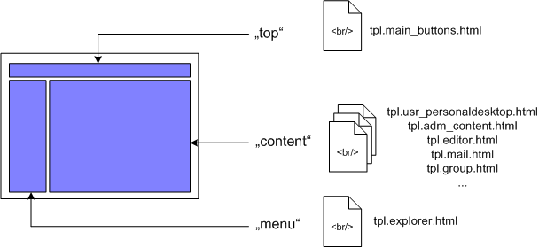
Template structure of ILIAS default skin: basic structure
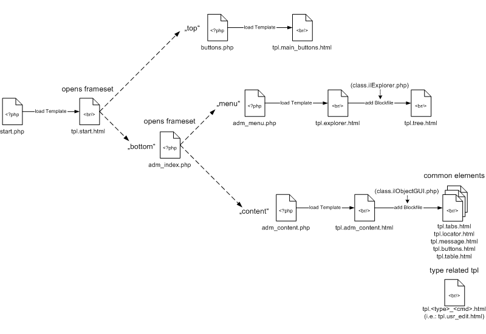
Relation between php scripts and templates of ILIAS default skin: (Example: admin console)
to do
to do
download proposed standard (pdf)